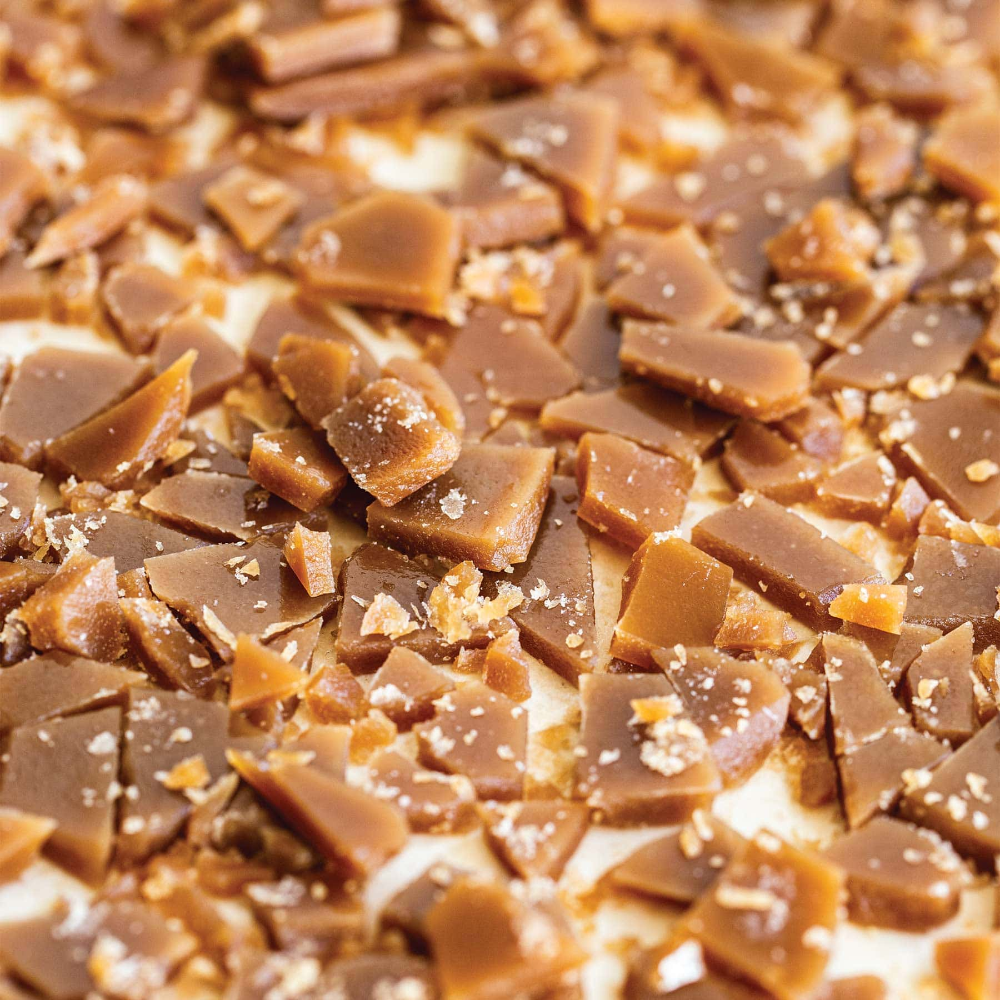

Homemade Toffee Bits

Description
Just 3 ingredients and 15 minutes and you have DIY homemade toffee bits from scratch! They’re absolutely amazing in cookies, brownies, streusel toppings on muffins or pies, or just as a sweet snack.
Ingredients
- 1 stick (113 grams) unsalted American butter
- 1 cup (200 grams) light brown sugar
- 1 teaspoon fine salt
Steps
- Line a small rimmed baking sheet with parchment paper or a silicone baking mat.
- In a heavy-bottomed small saucepan, melt the butter over medium heat. Add the sugar and salt and whisk vigorously for one minute until combined. Cook, stirring constantly, until the mixture looks like melted peanut butter and a candy thermometer reaches 295 to 305°F, about 10 minutes.
- If the mixture separates at all, remove from heat and whisk vigorously until recombined. Return to heat and continue cooking.
- Immediately and carefully pour the hot toffee onto the prepared baking pan, allowing it to spread into an even layer. Let cool and harden for about 20 minutes.
- Place the sheet of toffee on a cutting board or in a zip top bag. Use a mallet, rolling pin, or heavy object to crack it into small pieces. You can also cut into bits with a sharp serrated knife. Store in an airtight container for up to 1 week.